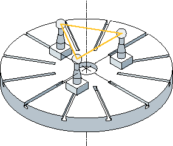
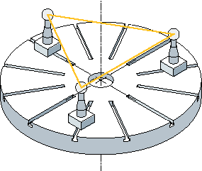
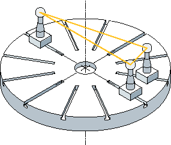
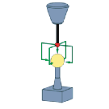
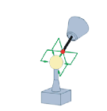
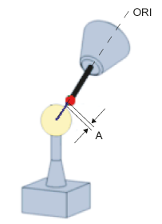

Measuring an individual rotary axis
The following steps must be carried out in order to measure a rotary axis:
-
Mount the calibration ball on the machine table (user)
-
Define and approach the three ball positions with the rotary axis that is to be measured (user)
-
Specify and approach the three ball positions with the probe in a linear movement/in linear movements (user)
-
Using CYCLE996, scan all three ball positions of the calibration ball with the probe.
Mounting the calibration ball
In the case of machinery, the calibration ball is to be installed on the machine table.
In order to measure kinematics for swivel-mounted workholders, the ball must be incorporated into the appropriate workholder. In all cases it must be ensured that the probe can approach and bypass the mounted calibration ball without collision in all the selected rotary axis positions.
Considering the need to avoid collisions, the calibration ball should be mounted as far as possible from the center of rotation of the rotary axis that is to be measured.
If the three ball positions result in too small a triangle, this will negatively affect the accuracy of the procedure:
Calibration ball mounted sufficiently far from the center of rotation; large triangle can be clamped | Calibration ball mounted too near the center of rotation; clamped triangle is too small |
 |  |
| Note |
While measuring a rotary axis, the mechanical hold-down of the calibration ball must not be altered. It is only with table and mixed kinematics that different calibration ball mounting positions are permissible for the purpose of measuring the first and subsequent rotary axes. |
Defining the rotary axis positions
Three measuring points (ball position) must be defined for each rotary axis. Please note that the positions of the ball in space (resulting from the three defined rotary axis positions) should lead to as large a triangle as possible being clamped.
Rotary axis positions sufficiently far away from one another; large triangle clamped | Rotary axis positions poorly selected; clamped triangle is too small |
|  |  |
The calculated inside angle of the rotary axis angle segment is monitored in the TVL parameter. Angle values of < 20 degrees can cause inaccuracies when calculating the kinematics.
Approaching the ball position
First of all, the probe must be positioned above the calibration ball at each of the three rotary axis positions defined by the user. The position must only be approached by traversing the linear axes (X, Y, Z). The positions themselves must be entered (set up) by the user. They should be determined manually using an active probe.
When selecting approach positions, please bear in mind that, within the context of automatic calibration ball scanning, the probe always moves in its preferred direction. Particularly where head and mixed kinematics are concerned, the starting position should be selected in a way that ensures alignment of the probe with the center point of the calibration ball in the approach position.
Starting position selected directly above the calibration ball | Starting position selected laterally above the calibration ball |
|  |  |
| Note |
If the machine does not proceed as expected when the calibration ball is being scanned, the basic orientation and travel direction of the rotary axes should be checked. (Has DIN conformity been maintained when defining the axes?) |
Starting position
The probe must be prepositioned in the direction of the tool orientation (ORI) above the highest point of the calibration ball (probe aligned with ball center point). After approaching the starting position, the distance (A) from the calibration sphere should be approximately DFA.
Starting position for the tool length in relation to the probe ball circumference
| Note |
Measuring the kinematics is also possible with active 5-axis transformation (TRAORI). As a requirement for measuring the kinematics with active TRAORI, the vectors of the 5-axis transformation must be roughly set. The positions for measuring the kinematics are approached in the user program with active transformation. The transformation can be switched on or off during the actual measuring. SD55740 $SCS_MEA_FUNCTION_MASK |
Measuring an individual ball position
Once the probe has been positioned in accordance with user specifications above the ball, either manually or by the part program (starting point of CYCLE996), the calibration ball is scanned by calling CYCLE996 and the current ball position is measured.
To this end, the user should parameterize and call CYCLE996 separately for each ball position.